Le texte du jeu et les voix sont en anglais : les noms des boutons, des activités et des personnages restent ceux qui s'affichent à l'écran.
Présentation
Math Workshop (affiché « Math Workshop (Mathémagique) ») est un jeu éducatif de maths pour enfants, édité par Broderbund en 1994 sur CD-ROM pour Windows. Cette page décrit la version anglaise, jouée ici dans le navigateur.
Vous êtes chez Poly Gonzales, qui dirige l'atelier. Dans sa salle de contrôle, chaque objet du décor ouvre une activité :
- un bowling où un gorille, Gus, lance ses boules quand on répond juste (calcul, fractions, estimation) ;
- une boutique de rythmes où l'on découpe des fractions de mesure pour reconstituer des morceaux, devant Algebird, un oiseau qui danse ;
- un vitrail à peindre, avec dix motifs ;
- trois sortes de puzzles : des photos cachées, des tableaux à motifs et des dessins faits de traits ;
- un jeu de fusées, où l'on affronte Poly au jeu de Nim.
On y travaille, sans le dire, les opérations, les fractions, l'estimation, les motifs, l'orientation dans l'espace et la logique. Il n'y a pas de « game over » : on peut recommencer autant de fois qu'on veut.
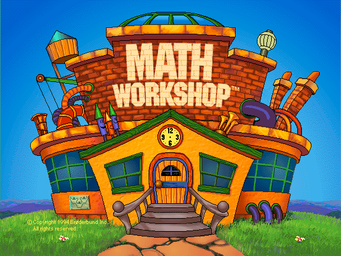
Démarrer
L'écran titre
Au premier lancement, le logo « Brøderbund présente » s'affiche d'abord (un clic ou une touche le passe). Puis l'écran titre : cliquez sur la porte pour entrer. Si vous ne faites rien, la porte s'ouvre toute seule à la fin de la musique. L'horloge de la façade indique l'heure de votre ordinateur.
La plaque en bas à gauche ouvre les crédits ; le bouton EXIT y ramène à l'écran titre.
Se connecter
En entrant, Poly vous accueille et le moniteur de connexion monte devant vous. C'est lui qui retient qui joue : les niveaux réussis au bowling, les vitraux peints et les morceaux du Rhythm Shop sont gardés par joueur.
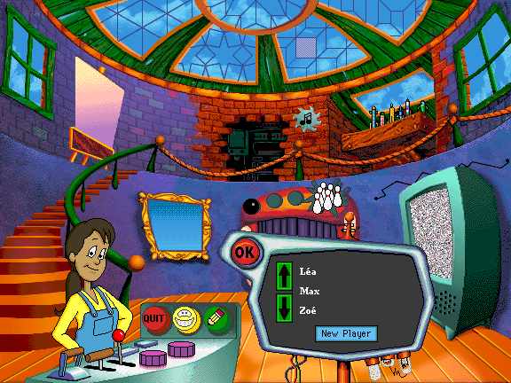
- Nouveau joueur : cliquez sur New Player (si la liste est vide, la saisie commence directement), tapez le prénom (28 caractères au plus, accents acceptés) puis cliquez sur OK ou appuyez sur Entrée. Un prénom déjà pris est refusé.
- Joueur existant : parcourez la liste avec les flèches, cliquez sur le nom (ou double-cliquez), puis OK. Les noms sont rangés par ordre alphabétique.
- Changer de joueur en cours de route : bouton Sign-in (le crayon) sur le pupitre de Poly, ou clic sur l'étiquette du nom dans le Bowling et dans Pattern Windows.
Sans joueur connecté, un clic sur une activité fait demander à Poly de se connecter d'abord.
Les joueurs (40 au plus) et leurs progrès sont enregistrés dans le navigateur de cet appareil : ils ne suivent pas d'un appareil, ni d'un navigateur, à l'autre, et disparaissent si vous effacez les données du site.
Les préférences
Elles ne sont pas affichées par un bouton : Ctrl + clic sur Sign-in (sur écran tactile, un appui long, voir « Sur mobile »).
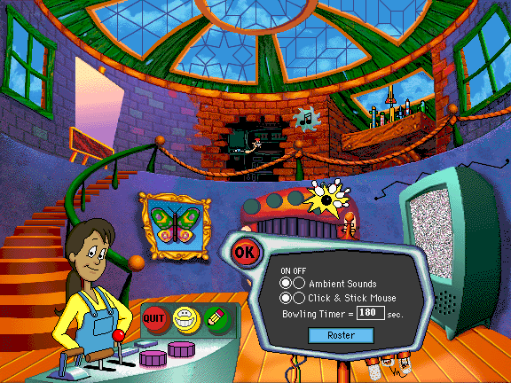
- Ambient Sounds : la musique de fond et les bavardages de Poly dans l'atelier (ON / OFF). Les bruitages et les voix des activités ne sont pas concernés.
- Click & Stick Mouse : pour déplacer une pièce, on clique pour la prendre, puis on clique pour la poser (réglage d'origine, plus simple pour les petites mains). Désactivé, il faut glisser la pièce en gardant le bouton enfoncé.
- Bowling Timer : le temps donné, en secondes, pour réussir une série au Bowling, de 1 à 999 (180 par défaut). Une valeur hors de cette plage est ignorée.
- Roster : la liste des joueurs. Elle permet d'en ajouter (Add) ou de supprimer le joueur sélectionné (Delete) ; Preferences revient aux réglages.
Les réglages sont communs à tous les joueurs de l'appareil.
La salle de contrôle (Control Room)
C'est l'écran d'accueil de l'atelier. Cliquez sur un objet du décor pour lancer l'activité correspondante.
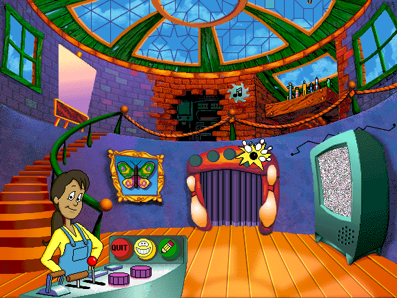
| Objet | Activité |
|---|---|
| Le rideau en forme de gueule rouge, aux quilles | Bowling for Numbers |
| Le trou dans le mur, avec un engrenage et une note de musique | Rhythm Shop |
| La verrière en vitrail, au plafond | Pattern Windows |
| La télévision | Hidden Picture Puzzles |
| Le cadre au papillon | Puzzle Patterns |
| Le chevalet, à gauche | Super Sticklers |
| L'étagère aux fusées, à droite | Rockets |
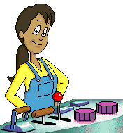
Poly est la jeune responsable de l'atelier. Cliquer sur elle lance une Math Trivia : un petit dessin humoristique sur un fait mathématique, avec son histoire racontée par Poly (19 au total, sans répétition tant qu'elles n'ont pas toutes été vues). Un clic sur l'image ou sur Poly la raconte à nouveau ; OK referme le moniteur.
Le pupitre de Poly porte trois boutons :
- Quit (rouge) : un sifflet apparaît ; cliquez dessus pour quitter et retourner à l'accueil du site, ou cliquez ailleurs pour rester. Ctrl + Q quitte directement ;
- Help (le visage souriant) : Poly vient expliquer. Cliquez ensuite sur n'importe quel objet pour entendre ce qu'il fait ; un clic pendant une explication l'interrompt ; cliquez sur Poly pour quitter l'aide. La première fois, Poly explique d'elle-même tout le fonctionnement ;
- Sign-in (le crayon) : changer de joueur (avec Ctrl, les préférences).
D'autres éléments du décor réagissent au clic, simplement pour le plaisir : les fenêtres, la rampe de l'escalier et les leviers du pupitre (qui figent ou relancent certaines animations).
Dans toutes les activités, Exit (rouge) ramène à la salle de contrôle et Help (un visage souriant) fait venir Poly, qui explique chaque élément de l'écran quand on clique dessus. Un clic sur Poly, ou sur la main « stop », referme l'aide.
Bowling for Numbers
But : répondre juste à dix questions pour que Gus lance un strike, puis réussir dix strikes pour finir un niveau.
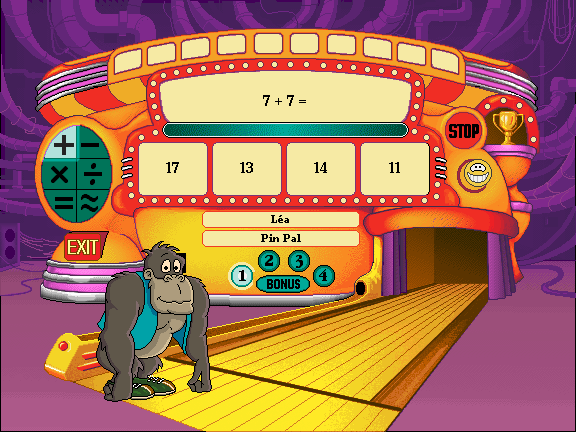
Comment jouer
- Choisissez le type de questions avec les six boutons de gauche :
- + − × ÷ : addition, soustraction, multiplication, division ;
- = : fractions équivalentes (on reconnaît la même quantité sous des dessins différents) ;
- ≈ : estimation (« About how many… ? », par exemple combien de pinheads de large mesure un toothpick).
- Choisissez un niveau, de 1 à 4, ou BONUS. Le bonus ne s'ouvre pour un type de questions qu'une fois ses quatre niveaux réussis.
- Cliquez sur GO!. Le bouton devient STOP (pour arrêter la partie).
- Une question s'affiche, avec quatre réponses : cliquez sur la bonne, ou appuyez sur 1, 2, 3 ou 4.
- Dix bonnes réponses (pas forcément de suite) font un strike : Gus lance sa boule et un témoin s'allume en haut de la machine (le « Strike Zone »). Dix strikes terminent le niveau : un ruban est gagné et le rang monte.
À savoir
- La barre de temps montre le temps qu'il reste pour donner les dix réponses de la série en cours (180 secondes, réglable dans les préférences). Quand il est écoulé, Gus est déçu mais les strikes déjà obtenus sont conservés.
- Une mauvaise réponse ne coûte rien : la bonne réponse est montrée, puis une nouvelle question arrive. Une question ratée peut revenir un peu plus tard.
- Dans un même niveau, les questions se corsent peu à peu au fil des strikes.
- Le jeu retient, pour chaque type de questions, le niveau en cours et les strikes obtenus.
- Cliquez sur l'étiquette du nom pour changer de joueur, sur Gus pour le voir réagir, et sur le trophée pour voir le Hall of Fame.
Les rangs. Votre rang, affiché sous votre nom, monte d'un cran à chaque niveau terminé (de 1 à 4, pour chacun des six types de questions ; le bonus ne compte pas). Il y a 25 rangs :
- Rookie Roller
- Ball Polisher
- Twinkle Toes
- Gutter Nut
- Cereal Bowler
- Lane Brain
- Alley Duster
- Toe Jammer
- Spare Ribber
- Pin Pal
- Spare Splitter
- Alley Cat
- Bowl Fighter
- Slammin' Slider
- Bowlmeister
- Side Splitter
- Steam Roller
- Alley Rapper
- King Pin
- Strikenator
- Super Bowler
- Pin Crusher
- Star Shooter
- Pin Wizard
- Strike Master
Pour l'estimation (≈). Les questions portent sur des longueurs, des durées et des poids, avec des unités parfois cocasses (des pinheads, des sugar cubes, des cans of soda, des cats…). Quelques repères utiles : 1 inch = 2,54 cm ; 1 foot = 12 inches ; 1 yard = 3 feet ; 1 ounce ≈ 28 g ; 1 pound = 16 ounces ; 1 kilogram ≈ 2,2 pounds ; 1 minute = 60 secondes ; 1 hour = 3 600 secondes ; 1 day = 86 400 secondes ; 1 month ≈ 30,4 jours ; 1 year = 365 jours dans le jeu.
Il n'y a ni série personnalisée (Custom Play) ni suivi de pourcentages dans cette version : pour suivre les progrès, voir le Hall of Fame.
Rhythm Shop
But : reconstituer le rythme d'un morceau en fabriquant les bonnes fractions de mesure, pour faire danser Algebird.
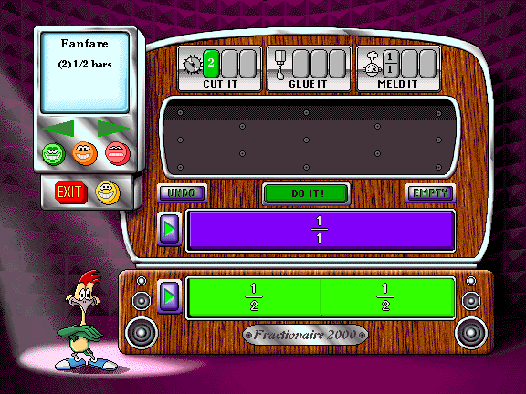
Comment jouer
- Choisissez un niveau avec les trois visages (Level Brothers), puis un morceau avec les flèches du Teletune, l'écran en haut à gauche. Il affiche le nom du morceau et sa « recette », par exemple Fanfare (2) 1/2 bars : deux moitiés de mesure. Il y a 45 morceaux, 15 par niveau.
- Le Pattern Bin (le bac du bas) montre les emplacements à remplir, avec leur taille. Le Parts Bin (juste au-dessus) contient au départ la barre entière, 1/1.
- Prenez une pièce et déposez-la dans le Fractionator, la zone du milieu, où se font les transformations.
- Choisissez un outil (voir ci-dessous) puis cliquez sur DO IT! (le bouton clignote quand l'opération est possible).
- Glissez les pièces obtenues dans les emplacements du Pattern Bin, dans le bon ordre. Une pièce déjà posée peut être reprise.
- Quand tous les emplacements sont remplis, la machine joue le morceau en entier, Algebird danse et une petite animation de félicitations suit. La prochaine fois, le même morceau revient avec le même motif, mais d'autres réglages d'outils à utiliser.
Les trois outils
- Cutter coupe une pièce en parts égales (le réglage donne le nombre de parts : 2, 3, 4…). Il n'y a qu'une pièce à la fois dans le Fractionator. Impossible de couper en parts plus petites que 1/16, ni en parts qui ne tombent pas juste.
- Gluer colle plusieurs pièces de même taille en une seule plus grande.
- Melder (« fusionner ») réunit des pièces de tailles différentes en une seule de la taille indiquée : par exemple 1/4 + 1/8 donnent 3/8.
Les autres boutons
- UNDO annule la dernière opération tant que les pièces sont dans le Fractionator ; EMPTY renvoie toutes les pièces du Fractionator dans le Parts Bin.
- Les deux boutons ▶ (Play Parts, Play Pattern) font écouter : le premier le rythme des pièces du Parts Bin, le second le morceau avec les emplacements déjà remplis. Algebird ne danse que si le motif est complet.
- Si une opération est impossible, Algebird vous le fait comprendre par une petite réplique. Cliquez sur lui pour le voir réagir.
Il n'y a ni score ni limite de temps.
Pattern Windows
But : peindre à son goût un vitrail, avec dix motifs et 15 couleurs.
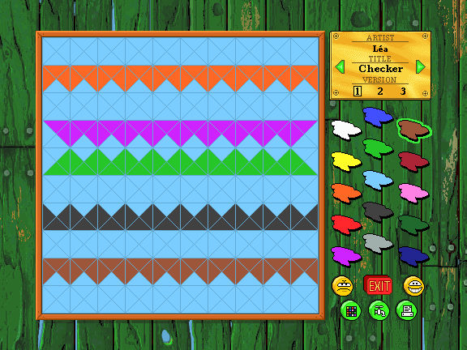
Comment jouer
- Cliquez sur une couleur de la palette, puis cliquez ou glissez dans le vitrail : chaque pièce touchée prend cette couleur. Cliquer de nouveau sur une pièce déjà de la couleur choisie l'efface (elle reprend sa couleur d'avant).
- Les flèches de la plaque dorée changent de motif : Checker, Triangles, Crosses, Stars, Links, Lace, Cubes, Turtle Shell, Hooks, Circles.
- Les numéros de version 1, 2 et 3 permettent de garder jusqu'à trois peintures par motif, par joueur. Tout est enregistré automatiquement.
- Sous la palette, de gauche à droite : Kaléidoscope (les couleurs défilent quelques secondes dans le vitrail), Faucet (le robinet : peint tout le vitrail de la couleur choisie ; avec le blanc, il efface tout) et Print. Au-dessus : Yuck! annule la dernière peinture (cliquez de nouveau pour la rétablir), Exit et Help.
- Print n'imprime pas : il télécharge une image PNG du vitrail.
- Les touches x et z passent à la couleur suivante ou précédente.
Idées de Poly : combien de formes différentes voyez-vous dans chaque fenêtre ? Combien faut-il de couleurs, au minimum, pour que deux pièces voisines n'aient jamais la même ? Peignez un motif qui se répète, puis lancez le Kaléidoscope !
Hidden Picture Puzzles
But : remplir exactement l'écran de la télévision avec des pièces, pour faire apparaître une photo cachée.
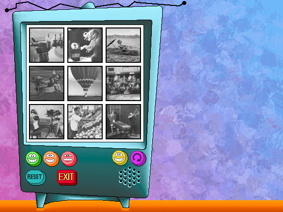
Comment jouer
- Choisissez un niveau avec les visages (Level Brothers) : vert (écran de 4 × 4 carrés), orange (5 × 5) ou rouge (6 × 6). Cliquez ensuite sur une des neuf photos.
- La télévision découpe l'écran en pièces de 1 à 7 carrés et les éparpille à droite.
- Prenez une pièce, déplacez-la, tournez-la avec le bouton Rotate ou la touche Espace (quart de tour, dans le sens des aiguilles d'une montre) et posez-la sur l'écran. Proche de la grille, elle s'y aimante, à condition de ne pas en recouvrir une autre. Une pièce posée se reprend par un clic.
- Chaque pièce posée révèle la partie de la photo qu'elle recouvre. Quand toutes sont en place, un petit air joue et la photo s'anime. Cliquez sur la télévision pour la revoir.
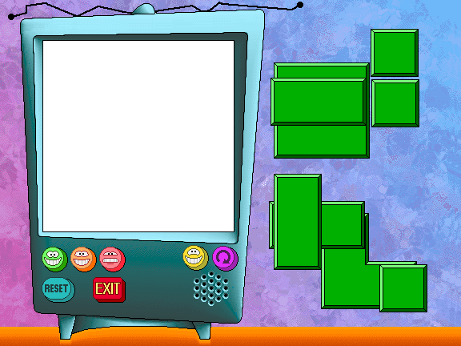
À savoir
- Rotate agit sur la dernière pièce prise, même lâchée.
- Reset éparpille de nouveau les pièces, avec le même découpage. En rechoisissant la même photo, le découpage change.
- Chaque puzzle a plusieurs solutions. Il n'y a ni score ni minuteur.
Puzzle Patterns
But : reconstituer un tableau en plaçant huit pièces dans le cadre, en s'aidant du motif du cadre.
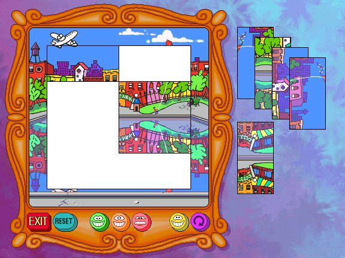
Comment jouer
- Choisissez un niveau avec les trois visages : trois menus de neuf tableaux, soit 27 puzzles, du plus simple (vert) au plus difficile (rouge). Cliquez sur un tableau.
- Le cadre de 4 × 4 carrés reste vide, et les huit pièces rectangulaires (deux carrés chacune) sont empilées à droite, parfois la tête en bas.
- Prenez une pièce, tournez-la au besoin (Rotate ou Espace) et déposez-la dans le cadre, où elle s'aimante.
- Le puzzle est réussi quand les huit pièces sont à leur place, dans le bon sens : le tableau s'anime (cliquez dessus pour le revoir).
Le cadre est un indice : son motif se répète dans l'image. Regardez-le bien avant de commencer. Triez les pièces par couleur ou par sens, remettez les personnages à l'endroit, et appariez les bords entre eux.
Les boutons : Exit, Reset (mélange de nouveau les pièces du même puzzle), les trois niveaux, Help (Poly) et Rotate. Il n'y a ni score ni minuteur.
Super Sticklers
But : recoller des traits pour refaire un dessin, qui s'anime une fois terminé.
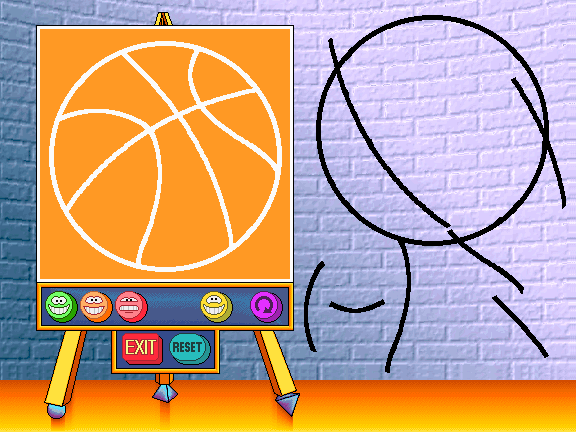
Comment jouer
- Choisissez un niveau avec les visages, puis un dessin parmi les neuf du menu (27 en tout).
- Les traits (Sticky Lines) sont éparpillés à droite. Prenez-en un, tournez-le au besoin (Rotate ou Espace) et posez-le sur le chevalet, sur le dessin à refaire. Un trait bien placé et bien orienté se colle de lui-même.
- Quand tous les traits sont collés, le dessin s'anime (cliquez sur le chevalet pour le revoir).
Les niveaux changent l'aide donnée :
- Vert : le dessin est tracé en blanc sur le chevalet ; il suffit de le recouvrir ;
- Orange : la moitié du dessin est déjà tracée en noir ; le reste n'apparaît qu'en silhouette ;
- Rouge : on ne voit que la silhouette, avec une petite image du dessin terminé en haut à droite, pour s'y référer.
Reset remet tous les traits en vrac. Il n'y a ni score ni minuteur.
Rockets
But : lancer la dernière fusée. C'est un jeu de Nim contre Poly (ou contre un ami).
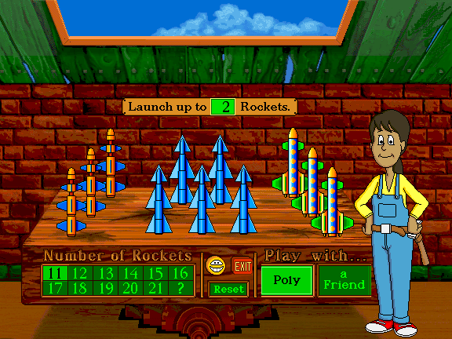
Comment jouer contre Poly
- Choisissez le nombre de fusées, de 11 à 21, avec le pavé (le ? en tire un au hasard).
- Le panneau Launch up to… Rockets indique le nombre maximal de fusées qu'on peut lancer à chaque tour, de 2 à 5. Cliquez dessus pour le changer, avant la partie ou après (pas pendant).
- À tour de rôle, on clique sur des fusées pour les lancer : de 1 jusqu'au maximum du tour. Pour que Poly commence, cliquez d'abord sur elle.
- Quand vous avez lancé le maximum, Poly joue toute seule. Si vous en avez lancé moins, cliquez sur Poly pour lui passer la main (au moins une fusée doit être partie).
- Celui qui lance la dernière fusée gagne.
À savoir
- Poly s'adapte : plus vous gagnez, mieux elle joue.
- Reset recommence avec le même nombre de fusées. Changer le nombre recommence aussi la partie.
- Help : Poly explique chaque élément de l'écran.
Jouer avec un ami : choisissez a Friend (Poly s'éclipse). Le jeu n'impose plus rien (ni limite par tour, ni gagnant) : à vous de convenir des règles. Le maximum du panneau peut alors aller jusqu'à 10. Quelques idées : tirer au sort qui commence, changer le maximum à chaque partie (que se passe-t-il au-delà de 5 ?), décider que celui qui lance la dernière fusée perd, n'autoriser que des fusées qui se ressemblent, ou inventer ses propres règles !
Un indice pour battre Poly : pensez à son dernier tour. Combien de fusées doit-il rester pour qu'elle ne puisse pas toutes les lancer ?
La solution (pour les parents)
Si le maximum par tour est M, la partie se gagne en laissant à l'adversaire un nombre de fusées multiple de M + 1 (par exemple 3, 6, 9… quand M vaut 2). Après chaque coup de l'adversaire, on lance de quoi retomber sur un multiple de M + 1. Poly le sait bien : elle ne se trompe volontairement que de temps en temps, selon son niveau.
Hall of Fame et certificats
Le Hall of Fame se trouve dans le Bowling : cliquez sur le trophée. Il montre, pour chaque joueur, son rang et, pour chacun des six types de questions, des rubans de couleur : un par niveau réussi (1, 2, 3, 4 et BONUS).
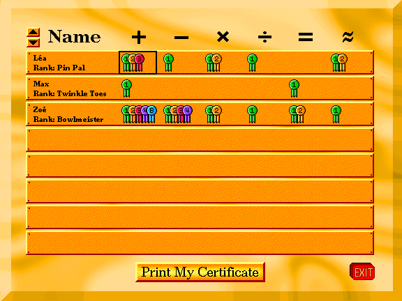
- Les flèches en haut à gauche changent de page (huit joueurs par page).
- Cliquez sur une case de la grille (un joueur, un type de questions) puis sur Print My Certificate : un certificat (« Certificate of Merit »), à ce nom, avec les rubans gagnés et le rang, est téléchargé en image PNG (au format paysage). Aucun certificat n'est possible tant qu'aucun niveau de ce type n'est réussi.
- Exit revient au Bowling.
Commandes
Souris ou toucher : un clic (ou un toucher) suffit pour tout.
Déplacer une pièce (Hidden Picture Puzzles, Puzzle Patterns, Super Sticklers, Rhythm Shop) : selon le réglage Click & Stick Mouse (activé par défaut), cliquer pour prendre puis cliquer pour poser, ou bien glisser sans relâcher. En mode cliquer-poser, tant qu'une pièce est en main, un clic la pose.
| Touche | Où | Effet |
|---|---|---|
| 1 à 4 | Bowling for Numbers | choisir la réponse 1 à 4 |
| Espace | Hidden Picture Puzzles, Puzzle Patterns, Super Sticklers | tourner la pièce (quart de tour) |
| 1 à 9 | Rhythm Shop | choisir un des neuf outils (Cutter, Gluer, Melder, de gauche à droite) |
| Tab | Rhythm Shop | outil suivant |
| x / z | Pattern Windows | couleur suivante / précédente |
| Entrée | moniteur de connexion | valider le nom, fermer (OK) |
| Tab, Maj + Tab, Entrée | dans le jeu | parcourir les boutons au clavier et activer celui qui est sélectionné |
| Ctrl + clic sur Sign-in | salle de contrôle | ouvrir les préférences |
| Ctrl + Q | partout | quitter le jeu |
Sur mobile
Le jeu se joue au doigt : un toucher remplace le clic.
- Les préférences : faites un appui long (environ une demi-seconde) sur le bouton Sign-in, à la place du Ctrl + clic.
- Les touches (1 à 4, Espace, x / z, Tab) n'ont pas besoin de clavier : touchez directement les réponses, le bouton Rotate, les couleurs ou les boutons d'outils.
- Déplacer une pièce : touchez-la, puis touchez l'endroit où la poser (réglage d'origine). Le glisser est possible si vous désactivez Click & Stick dans les préférences.
- La saisie d'un nom fait apparaître le clavier de l'appareil.
La version de 1994 et celle de 1997
Il existe un manuel en anglais de Math Workshop Deluxe (version 2.0, 1997). Cette page décrit le jeu de 1994, qui est celui joué ici. Ce que vous lirez dans le manuel de 1997 et que vous ne trouverez pas ici :
- la salle de contrôle n'a qu'un seul étage (pas de « Level 1 / Level 2 » ni de bouton Upstairs, Downstairs) ;
- il n'y a pas de Boiler Room (la chaufferie et ses flammes) ;
- il n'y a que trois boutons sur le pupitre de Poly (Quit, Help, Sign-in) : pas de bouton Math Trivia (c'est un clic sur Poly), Preferences (c'est Ctrl + clic sur Sign-in) ni Tracking ;
- pas de suivi de progression ni d'export (le Hall of Fame est le seul suivi) ;
- pas de Custom Play ni de bouton Practice au Bowling ;
- pas de bouton Demo au Rhythm Shop ;
- pas de jeu à deux dans Hidden Picture Puzzles ;
- pas de Parents' Video Guide (les vidéos) ;
- les tableaux de Puzzle Patterns du niveau rouge sont au nombre de neuf (le manuel de 1997 n'en cite que sept dans ses indices) ;
- Rockets est un jeu de Nim contre Poly, qui est une personne (Poly Gonzales) et non un perroquet ; son niveau n'est ni affiché ni enregistré ;
- ici, « Print » et « Print My Certificate » téléchargent une image au lieu d'imprimer ;
- les joueurs se gardent dans le navigateur (et non dans un fichier MWRoster) ; les prénoms peuvent contenir des lettres accentuées.
Crédits et mentions
Math Workshop est un jeu Broderbund (Brøderbund Software), © 1994. Math Workshop, Active Mind Series et Brøderbund sont des marques de leurs propriétaires.
Cette réimplémentation est un projet de fan, sans lien avec les ayants droit : elle fait tourner le jeu dans le navigateur en lisant les fichiers de données du CD d'origine, qui ne sont pas fournis ici. Cette page n'est pas le manuel d'origine : c'est un texte réécrit, adapté à la version de 1994.
L'équipe d'origine, d'après la liste du manuel de 1997 (celle du CD de 1994, qui défile à l'écran Crédits, peut différer) :
- Concept original : Mark Schlichting. Conception : Amanda Crispel (direction), Bo Everson, Hilary Nation, Tom Rettig. Production : Hilary Nation. Gestion de produit : Sioban Scanlon.
- Programmation : Lance Groody et Frankie Ford (direction), Bob Arient, Michael G. Rivard, Diane Cerreta, Rod Nelson, avec Grace Kim, Ben Ceschi, Samir Ramji, Guy Nicholas, Jeff Charvat, Bob Gulian, Glenn Axworthy, Michael Zacks.
- Direction artistique : Bo Everson, Michelle Bushneff. Personnages et animation : David Magliocco. Art et animation : Brad Pollard, Michelle Graham, Avril Harrison, Stephen Peterson, Cheryl Middleman, Phillip Bossant, Bob King, Kevin Dooley, avec Julie Glavin, Caitlin Mitchell-Dayton, Peter Mitchell-Dayton, Peter Babakitis. Infographie : Martha Embry.
- Direction sonore : Tom Rettig, Jonelle Adkisson. Conception sonore : Michael Barrett, Chris Clanin, avec Joey Edelman, Tom Hays, John Loose, Gary Schwantes, Brian Woodbury, Jane Scolieri, Tim Larkin.
- Voix : Miriam Carr, Tom Rettig, Mark Schlichting, Michael Barrett, Carl Albert. Dialogues : Suze Allen, Jana Goerlitz, avec Valorie Singer et Sioban Scanlon.
- Photographies sous licence de : American Photographic Archives, Inc. ; Association des Amis de Jacques Henri Lartigue ; Rick Doyle ; Underwood Photographic Archive ; Wayzata Technology, Inc. ; The IMAGE Bank, Inc.
- Remerciements particuliers à Margo Nanny et Phil Gonsalves, et à tous les enseignants, parents et enfants qui ont contribué au jeu.
Cette version du site : la musique est jouée avec la soundfont GeneralUser GS (licence fournie avec le jeu), réduite aux instruments du jeu.